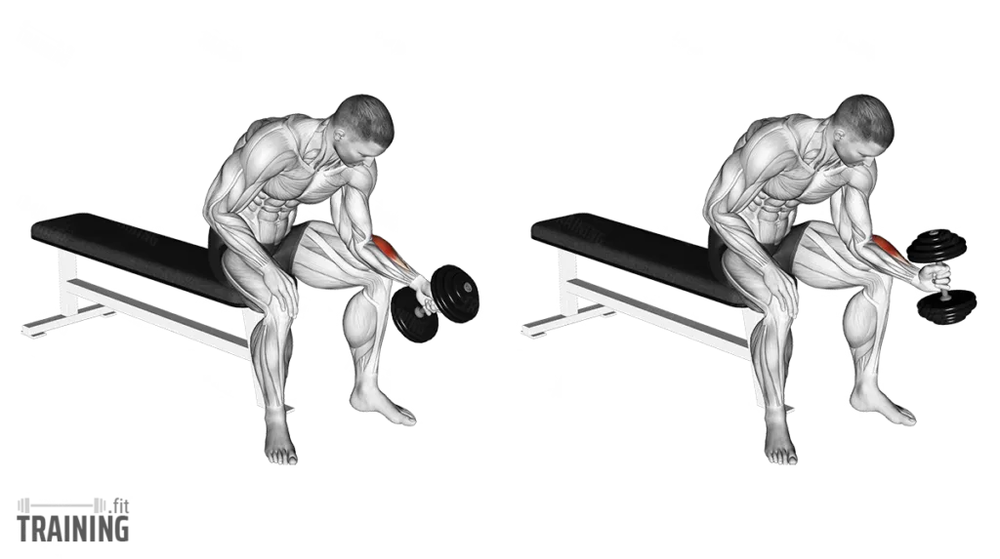
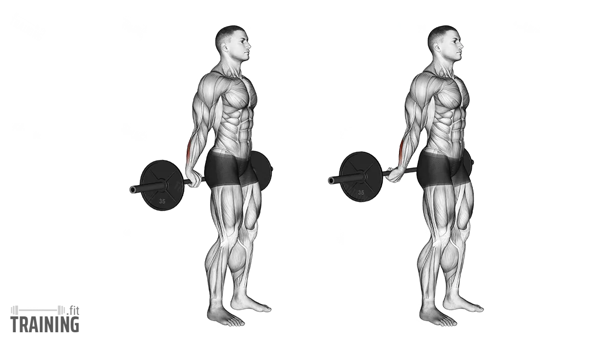
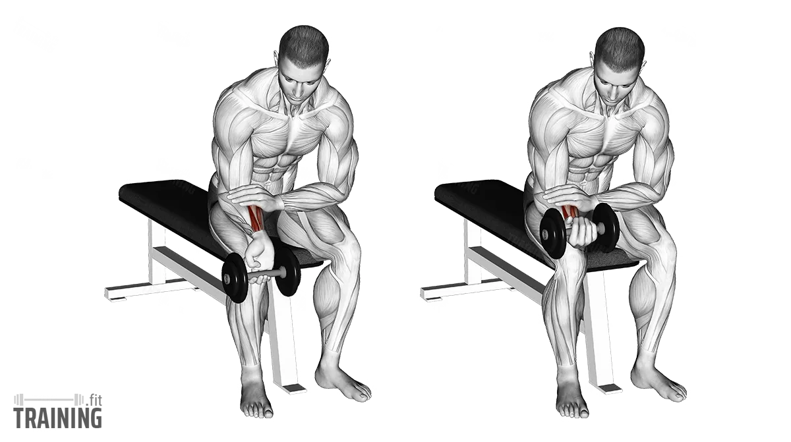

Exercise 01
Hammer Grip Wrist Curl
Targets the brachioradialis, forearms, and grip-support muscles. Helps build thicker forearms and stronger wrist control.

Form
- Sit on a bench and brace your forearm on your thigh
- Hold the dumbbell with a neutral hammer grip
- Let the wrist lower slowly
- Curl the wrist upward in control
- Squeeze at the top
Sets & Reps
Growth
3–4 × 12–15
Grip
3 × 10–15
—
—
Tip: Move only the wrist, not the whole arm.
Fact: Hammer-style forearm work helps improve grip strength for rows, curls, and deadlifts.
Exercise 02
Reverse Standing Wrist Curl
Targets the wrist extensors, the muscles on the top side of the forearm.

Form
- Stand tall holding the bar behind your back
- Use an overhand grip
- Curl the wrists upward
- Lower slowly under control
- Keep your elbows still
Sets & Reps
Growth
3 × 12–20
Endurance
2–3 × 15–20
—
—
Tip: Use lighter weight here. Wrist extensor muscles usually respond better to strict reps than heavy load.
Fact: Training wrist extensors can help balance forearm development and support wrist health.
Exercise 03
Wrist Curl
Targets the wrist flexors, the muscles on the underside of the forearm.

Form
- Sit on a bench with your forearm resting on your thigh
- Hold the dumbbell with your palm facing up
- Let the wrist drop into a stretch
- Curl the weight up using only your wrist
- Lower slowly
Sets & Reps
Growth
3–4 × 12–20
Strict
3 × 15
—
—
Tip: Use a full stretch at the bottom and a full squeeze at the top.
Fact: Wrist curls are one of the most direct ways to build the forearm flexors and improve grip endurance.
Best Forearm Workout Order
A good order would be:
Hammer Grip Wrist Curl — 3 sets
Wrist Curl — 3–4 sets
Reverse Standing Wrist Curl — 3 sets
This gives you: forearm thickness, flexor strength, extensor balance, and better grip support.